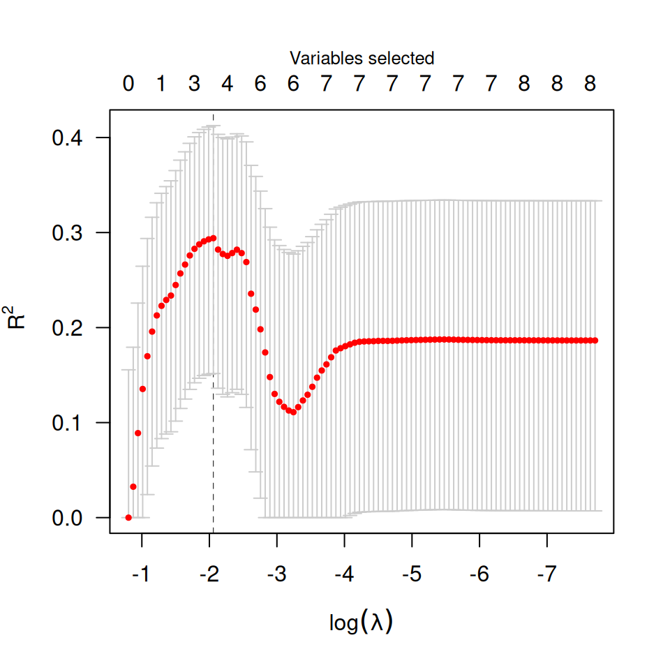
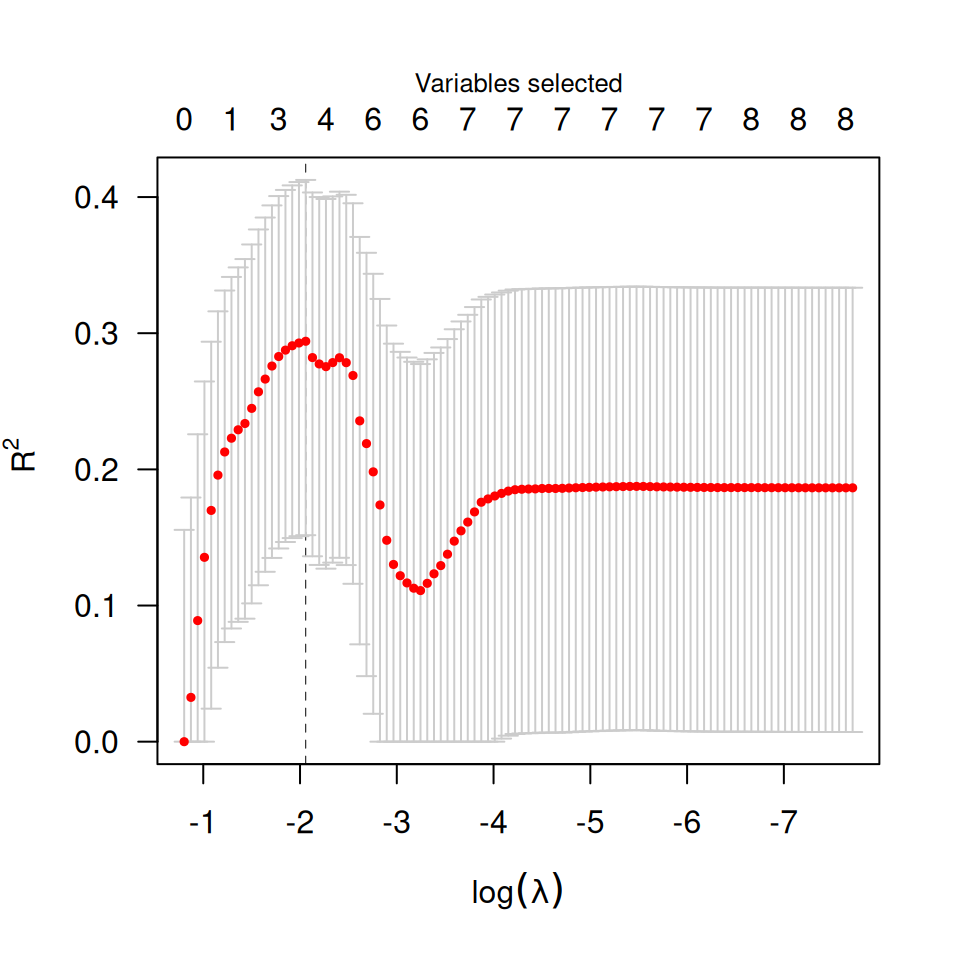

Performs k-fold cross validation for MCP- or SCAD-penalized regression models over a grid of values for the regularization parameter lambda.
Usage
cv.ncvreg(
X,
y,
...,
cluster,
nfolds = 10,
fold,
returnY = FALSE,
trace = FALSE
)
cv.ncvsurv(
X,
y,
...,
cluster,
nfolds = 10,
fold,
se = c("quick", "bootstrap"),
returnY = FALSE,
trace = FALSE
)Arguments
- X
The design matrix, without an intercept, as in
ncvreg()orncvsurv().- y
- ...
- cluster
cv.ncvreg()andcv.ncvsurv()can be run in parallel across a cluster using the parallel package. The cluster must be set up in advance using theparallel::makeCluster()function from that package. The cluster must then be passed tocv.ncvreg()orcv.ncvsurv()(see example).- nfolds
The number of cross-validation folds. Default is 10.
- fold
Which fold each observation belongs to. By default the observations are randomly assigned.
- returnY
Should
cv.ncvreg()/cv.ncvsurv()return the linear predictors from the cross-validation folds? Default isFALSE; ifTRUE, this will return a matrix in which the element for row i, column j is the fitted value for observation i from the fold in which observation i was excluded from the fit, at the jth value of lambda. NOTE: Forcv.ncvsurv(), the rows ofYare ordered by time on study, and therefore will not correspond to the original order of observations pased tocv.ncvsurv().- trace
If set to
TRUE, inform the user of progress by announcing the beginning of each CV fold. Default isFALSE.- se
For
cv.ncvsurv(), the method by which the cross-valiation standard error (CVSE) is calculated. The 'quick' approach is based on a rough approximation, but can be calculated more or less instantly. The 'bootstrap' approach is more accurate, but requires additional computing time.
Value
An object with S3 class cv.ncvreg or cv.ncvsurv containing:
- cve
The error for each value of
lambda, averaged across the cross- validation folds.- cvse
The estimated standard error associated with each value of for
cve.- fold
The fold assignments for cross-validation for each observation; note that for
cv.ncvsurv(), these are in terms of the ordered observations, not the original observations.- lambda
The sequence of regularization parameter values along which the cross-validation error was calculated.
- fit
- min
The index of
lambdacorresponding tolambda.min.- lambda.min
The value of
lambdawith the minimum cross-validation error.- null.dev
The deviance for the intercept-only model. If you have supplied your own
lambdasequence, this quantity may not be meaningful.- Bias
The estimated bias of the minimum cross-validation error, as in Tibshirani and Tibshirani (2009) doi:10.1214/08-AOAS224
- pe
If
family="binomial", the cross-validation prediction error for each value oflambda.- Y
If
returnY=TRUE, the matrix of cross-validated fitted values (see above).
Details
The function calls ncvreg/ncvsurv nfolds times, each
time leaving out 1/nfolds of the data. The cross-validation error is
based on the deviance; see here for more details.
For family="binomial" models, the cross-validation fold assignments are
balanced across the 0/1 outcomes, so that each fold has the same proportion
of 0/1 outcomes (or as close to the same proportion as it is possible to
achieve if cases do not divide evenly).
For Cox models, cv.ncvsurv() uses the approach of calculating the full
Cox partial likelihood using the cross-validated set of linear predictors.
Other approaches to cross-validation for the Cox regression model have been
proposed in the literature; the strengths and weaknesses of the various
methods for penalized regression in the Cox model are the subject of current
research. A simple approximation to the standard error is provided,
although an option to bootstrap the standard error (se='bootstrap') is also
available.
References
Breheny P and Huang J. (2011) Coordinate descent algorithms for nonconvex penalized regression, with applications to biological feature selection. Annals of Applied Statistics, 5: 232-253. doi:10.1214/10-AOAS388
Examples
data(Prostate)
cvfit <- cv.ncvreg(Prostate$X, Prostate$y)
plot(cvfit)
 summary(cvfit)
#> MCP-penalized linear regression with n=97, p=8
#> At minimum cross-validation error (lambda=0.0843):
#> -------------------------------------------------
#> Nonzero coefficients: 4
#> Cross-validation error (deviance): 0.53
#> R-squared: 0.60
#> Signal-to-noise ratio: 1.49
#> Scale estimate (sigma): 0.728
fit <- cvfit$fit
plot(fit)
summary(cvfit)
#> MCP-penalized linear regression with n=97, p=8
#> At minimum cross-validation error (lambda=0.0843):
#> -------------------------------------------------
#> Nonzero coefficients: 4
#> Cross-validation error (deviance): 0.53
#> R-squared: 0.60
#> Signal-to-noise ratio: 1.49
#> Scale estimate (sigma): 0.728
fit <- cvfit$fit
plot(fit)
 beta <- fit$beta[,cvfit$min]
## requires loading the parallel package
if (FALSE) { # \dontrun{
library(parallel)
X <- Prostate$X
y <- Prostate$y
cl <- makeCluster(4)
cvfit <- cv.ncvreg(X, y, cluster=cl, nfolds=length(y))} # }
# Survival
data(Lung)
X <- Lung$X
y <- Lung$y
cvfit <- cv.ncvsurv(X, y)
summary(cvfit)
#> MCP-penalized Cox regression with n=137, p=8
#> At minimum cross-validation error (lambda=0.1276):
#> -------------------------------------------------
#> Nonzero coefficients: 3
#> Cross-validation error (deviance): 7.61
#> R-squared: 0.24
#> Signal-to-noise ratio: 0.31
plot(cvfit)
beta <- fit$beta[,cvfit$min]
## requires loading the parallel package
if (FALSE) { # \dontrun{
library(parallel)
X <- Prostate$X
y <- Prostate$y
cl <- makeCluster(4)
cvfit <- cv.ncvreg(X, y, cluster=cl, nfolds=length(y))} # }
# Survival
data(Lung)
X <- Lung$X
y <- Lung$y
cvfit <- cv.ncvsurv(X, y)
summary(cvfit)
#> MCP-penalized Cox regression with n=137, p=8
#> At minimum cross-validation error (lambda=0.1276):
#> -------------------------------------------------
#> Nonzero coefficients: 3
#> Cross-validation error (deviance): 7.61
#> R-squared: 0.24
#> Signal-to-noise ratio: 0.31
plot(cvfit)
 plot(cvfit, type="rsq")

plot(cvfit, type="rsq")
